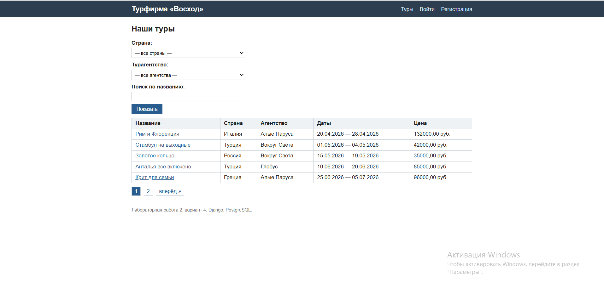
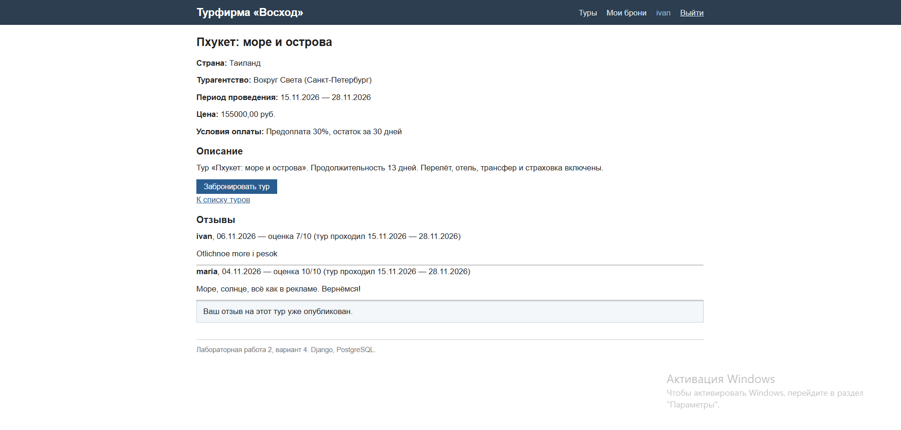
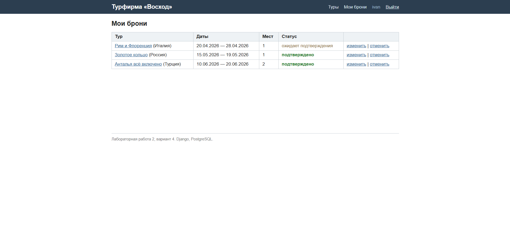
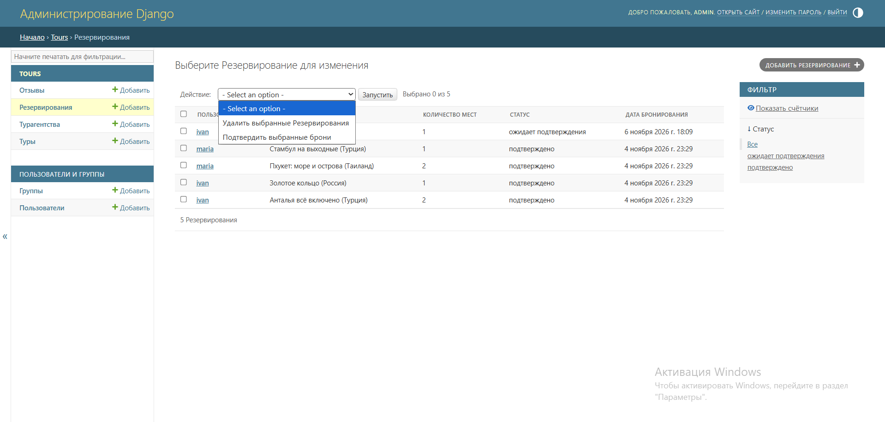
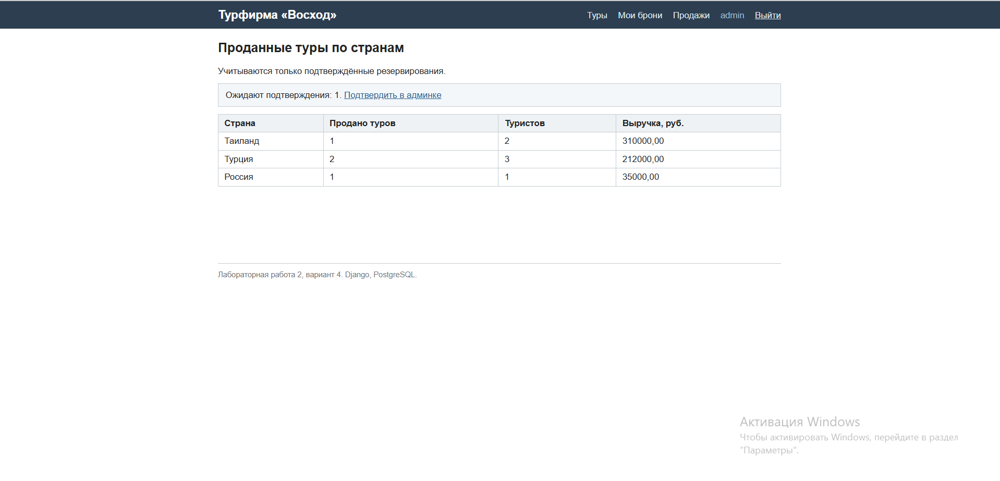

Реализация функционала
Базовый шаблон и оформление
Все страницы наследуются от базового шаблона base.html: шапка с навигацией,
область контента и подвал едины для сайта, дочерние шаблоны переопределяют
блоки title и content. Оформление - собственные стили
static/css/style.css без сторонних библиотек: таблицы, формы (включая вывод
ошибок валидации), кнопки, подсветка статусов броней, блок пагинации.
Содержимое шапки зависит от статуса посетителя (user.is_authenticated):
анониму - ссылки «Войти» и «Регистрация», вошедшему - «Мои брони», его имя
и кнопка «Выйти» (POST-форма, так как выход меняет состояние сессии).
Список туров, фильтрация и пагинация
Главная страница (/) выводит туры таблицей. Фильтры (страна, агентство,
поиск по названию) передаются GET-параметрами и применяются в методе
get_queryset() класса TourListView; список разбит на страницы по 5 туров
(paginate_by).

Поиск по названию - name__icontains (без учёта регистра); список стран для
фильтра формируется из базы (values_list(...).distinct() - без повторов);
данные агентств подгружаются одним запросом select_related('agency').
Адрес страницы с фильтром можно сохранить в закладки - состояние фильтра
живёт в URL. Пагинация выполняется на стороне базы: страница запрашивается
как LIMIT 5 OFFSET ..., из базы выбираются только записи нужной страницы;
ссылки пагинации сохраняют активные фильтры, обращение к несуществующей
странице возвращает 404.
Страница тура
Страница /tours/<id>/ (TourDetailView) выводит все поля тура из задания:
название, агентство, период, условия оплаты, цену, описание. Залогиненный
пользователь без брони видит кнопку «Забронировать тур» (POST-запрос);
забронировавший - статус своей брони. Ниже - отзывы с рейтингом и формой
нового отзыва (один отзыв на пользователя на тур).

Отзыв сохраняется методом form.save(commit=False): автор, тур и даты тура
заполняются на сервере, клиент эти поля не передаёт.
Регистрация и вход
Регистрация (/register/) - форма UserCreationForm (логин, пароль и
подтверждение; пароль хранится в виде хэша). Вход и выход - встроенные
представления LoginView/LogoutView.
Мои резервирования
Страница «Мои брони» (/my-reservations/) выводит брони текущего
пользователя. Редактирование (количество мест) и удаление брони доступны
только для собственных броней: в get_queryset() представлений добавлен
фильтр user=request.user, поэтому попытка открыть чужую бронь по id
возвращает 404.

Подтверждение резервирований (Django-admin)
В админ-панели зарегистрированы все модели. Для резервирований настроен
фильтр по статусу и действие make_confirmed («Подтвердить выбранные брони»):
администратор отмечает галочками ожидающие брони и подтверждает их одним
действием (один SQL-запрос UPDATE).

Таблица проданных туров по странам
Страница /sales/ формирует сводную таблицу по подтверждённым броням.
Агрегатный запрос группирует бронь по стране тура и вычисляет количество
проданных туров, число туристов и выручку (цена × количество мест -
арифметика выполняется в SQL средствами F()-выражений):
Reservation.objects.filter(status='confirmed')
.values(country=F('tour__country'))
.annotate(
tours_sold=Count('id'),
tourists=Sum('guests'),
revenue=Sum(F('tour__price') * F('guests'),
output_field=DecimalField()),
)
.order_by('-revenue')

Разграничение прав администратора и пользователя
Помимо админ-панели, администратор видит больше и в клиентской части -
проверка is_staff в шаблонах:
- ссылка «Продажи» в шапке видна только персоналу;
- на странице тура администратор видит таблицу всех броней тура со статусами и ссылкой на подтверждение в админке; обычный пользователь - только собственную бронь;
- на странице продаж администратору выводится счётчик броней, ожидающих подтверждения.
Скрытие элементов в шаблоне - удобство интерфейса; защита данных выполнена в
представлениях: страницы броней требуют входа (LoginRequiredMixin), а доступ
к объектам ограничен фильтром user=request.user в get_queryset().
Маршруты приложения
| URL | Представление | Назначение |
|---|---|---|
/ |
TourListView | список туров |
/tours/<pk>/ |
TourDetailView | страница тура + форма отзыва |
/tours/<pk>/reserve/ |
tour_reserve | бронирование (POST) |
/register/, /accounts/login/, /accounts/logout/ |
регистрация и вход | |
/my-reservations/ |
MyReservationsView | свои брони |
/reservations/<pk>/edit/, /delete/ |
изменение, отмена брони | только свои |
/sales/ |
sales | продажи по странам |
/admin/ |
Django-admin | управление данными |